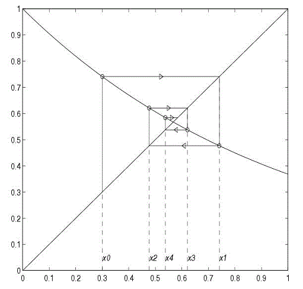

Bienvenido!
Este es un nuevo apartado, donde se utiliza el metodo de punto fijo
El programa funciona perfecto en el navegador mozila firefox, pero tiene algunos problemas en navegadores como internet explorer, se recomienda usar firefox.
La grafica podria no mostrarse al principio, aun despues de insertar la funcion. Recargue la pagina, si eso no funciona, mas abajo se especifica como insertar funciones.
Los elementos se encuentran de esta manera
- Cuadro de informacion: brinda informacion inicial, especifica errores y advertencias.
- Grafica de la funcion: cuadro de 16x20 digitos, muestra la funcion
- Campos para ingresar: A diferencia de la pagina anterior, debera ingresar 2 funciones, f(x): a la cual buscaremos su raiz, y g(x): usted debe llevar f(x) a la forma x = g(x) para encontrarla. Se usara para encontrar la raiz. Ademas se debe ingresar un valor inicial cercano a la raiz (puede consultar la grafica). Asi mismo, un error deseado, e iteraciones maximas para limitar el programa.
- Dialogo de resultados: Aqui se mostraran los resultados. Aqui se encontraran tambien las iteraciones realizadas por el programa para llegar a tales resultados
Insertando funciones
La grafica y la obtencion de datos puede diferir dependiendo de como se escriba la funcion. La funcion solo sera reconocida si se escribe en terminos de "x" (minuscula). Se recomienda escribir (x)^n para exponentes, como si de una calculadora convencional se tratase. Si no se usa el parentesis asì, se obtendran resultados negativos sin importar el exponente. Al mismo tiempo puede escribir raices de esta manera: (x)^(1/2) para raiz cuadrada, por ejemplo. Al involucrar un producto debemos agregar el signo de multiplicacion "*" asi: 3*x. Al mismo tiempo, si se desea involucrar a varios elementos en una sola operacion, hacer uso eficiente de los parentesis asi: (x + 3*x)/20.
Las funciones trigonometricas son reconocidas en inglès, asi: cos(x), sin(x), etc. Por favor no olvidar la importancia de el uso de parentesis. En cuanto a sumas y restas, simplemente agregue el signo.
En este apartado del metodo punto fijo, necesitara la funcion extra g(x). Para encontrarla debe hacer f(x)=0, luego despejar hasta llegar a x = g(x). Esa funcion nueva se usara para las distintas iteraciones generadas por el programa. Procure ingresar correctamente g(x) para que el programa muestre una raiz correcta de f(x)
Usando el Metodo de Punto fijo
El metodo de punto fijo consiste en evaluar repetidas veces una funcion x = g(x) hasta que el resultado tienda a un valor numerico en especifico

Se dice que la raiz se encuentra donde la grafica de la funcion g(x) se intercepta con la funcion identidad (y=x). Es importante observar la grafica para elegir un valor inicial apropiado, recuerde que entre mas cerca este el valor inicial de la raiz, menos iteraciones se necesitaran para llegar a ella.
El error relativo o tolerancia se refiere a que tanta incerteza acepta en su respuesta. Por ejemplo, un 0.01% de error (0.00001 en decimales). El programa tomara solamente numeros decimales (0.0001 por ejm)
El numero maximo de iteraciones se refiere a cuantas veces Se evaluara en caso de no llegar al error deseado. Esto limita al programa a no hacer un sinfin de iteraciones si el error variara demasiado.
Si se encuentra mas de una raiz de f(x), el programa llegara a la primer raiz (de izq. a der.) mas cercana al valor inicial dado